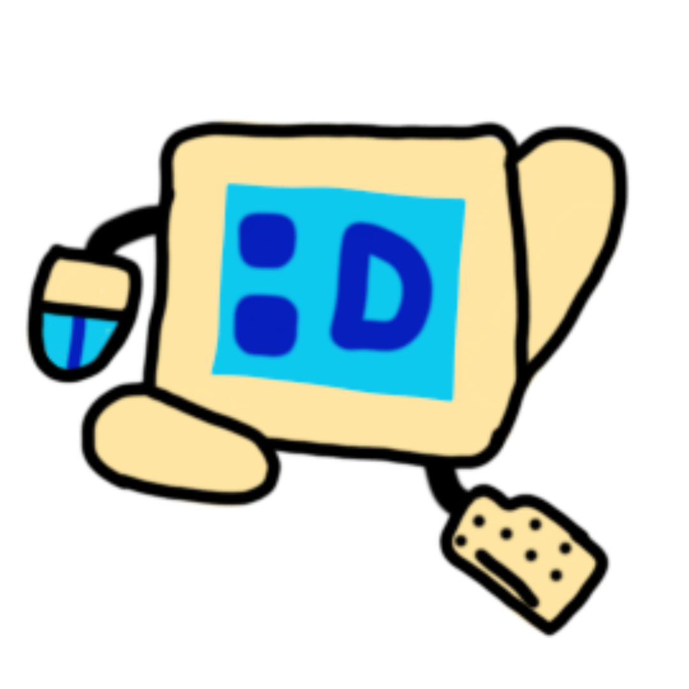

¿Qué es un Pyce?

Los Pyces son criaturas robóticas pequeñas de cuerpo metálico azulado. Características:
- Mano: Un ratón de computadora.
- Pie: Una tecla de teclado rota.
- Habilidades: Ellos tienen control sobre los portales, a lo que llaman Portalogia, lo que estudian para hacer portales hacia otros satelites de Techspawn
- Forma Verdadera: Una vez tuvieron un chip que los potenciaba hasta su 'forma verdadera', un Pyce azul que era capaz de usar esa energía para sí mismo... Después de eso, nadie más obtuvo ese poder.